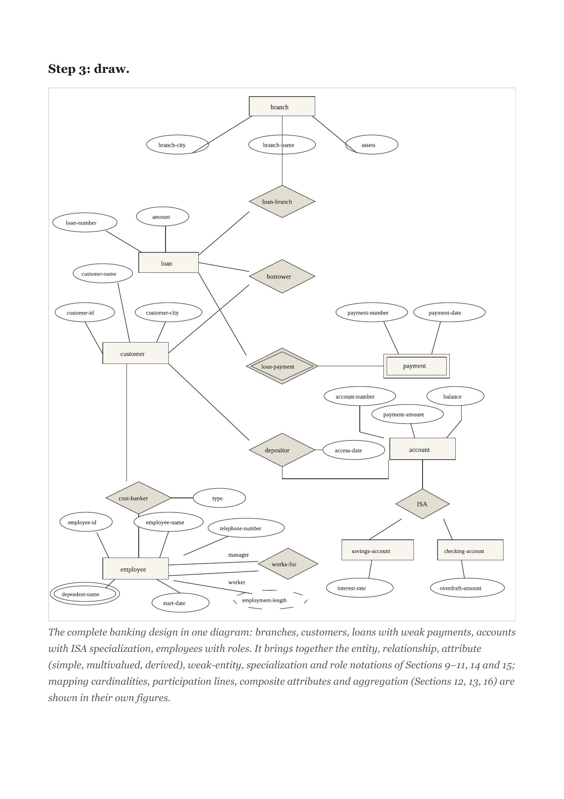

The making of
The page is the product.
Everyone else ships a PDF and calls it a library. I rebuilt the textbook from the syllabus up: 51 documents, 1,248 pages, every diagram drawn again.

Notes
Launch notes, making-ofs, and the occasional argument about paper. Everything published about NbkristQik, in one place.
Everyone else ships a PDF and calls it a library. I rebuilt the textbook from the syllabus up: 51 documents, 1,248 pages, every diagram drawn again.

The shelf lives inside Telegram. Open the bot, register once, and wait for your semester.
Open in Telegram